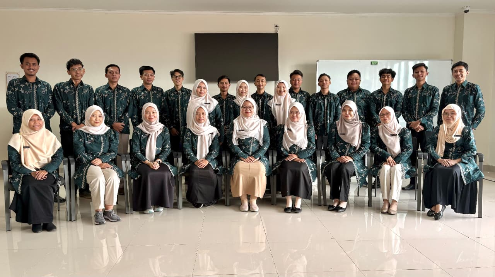
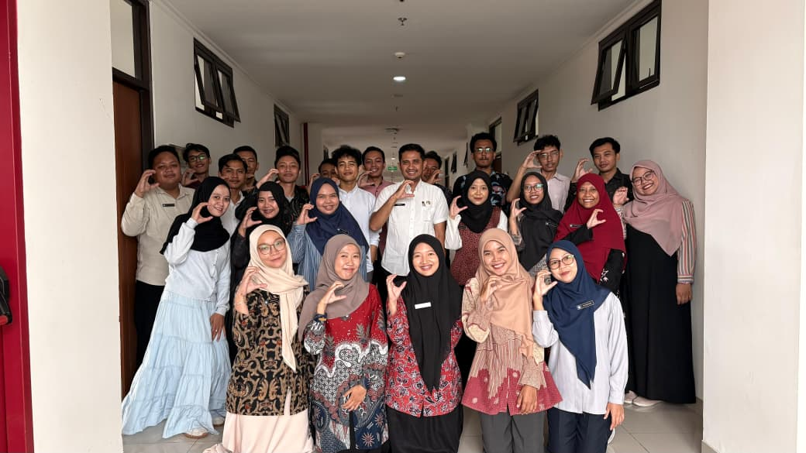
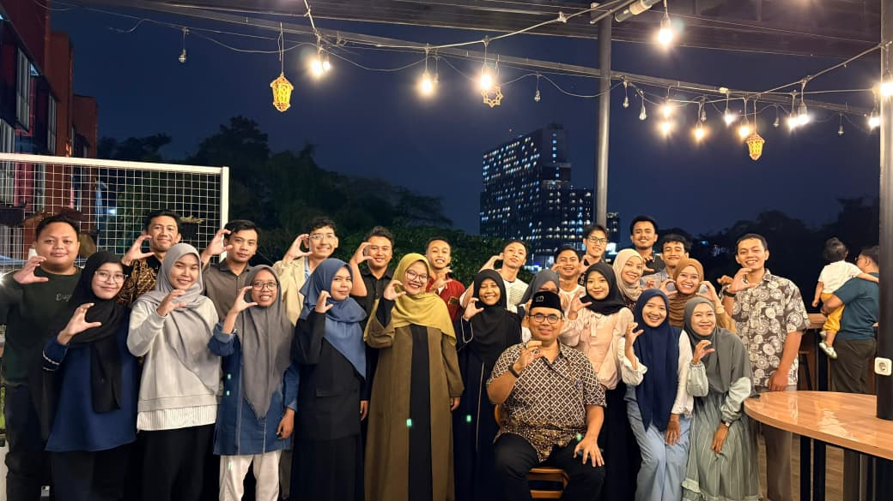
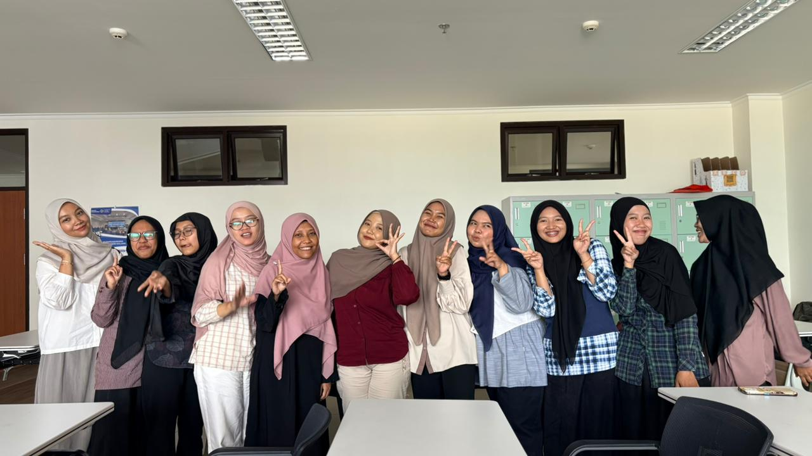
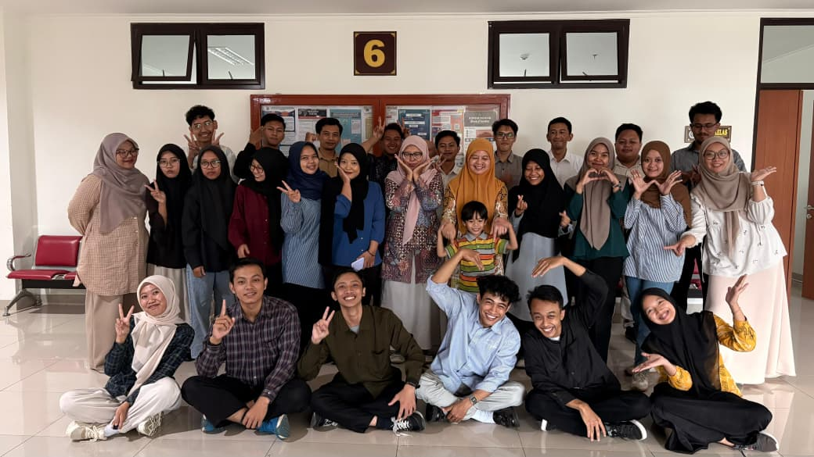
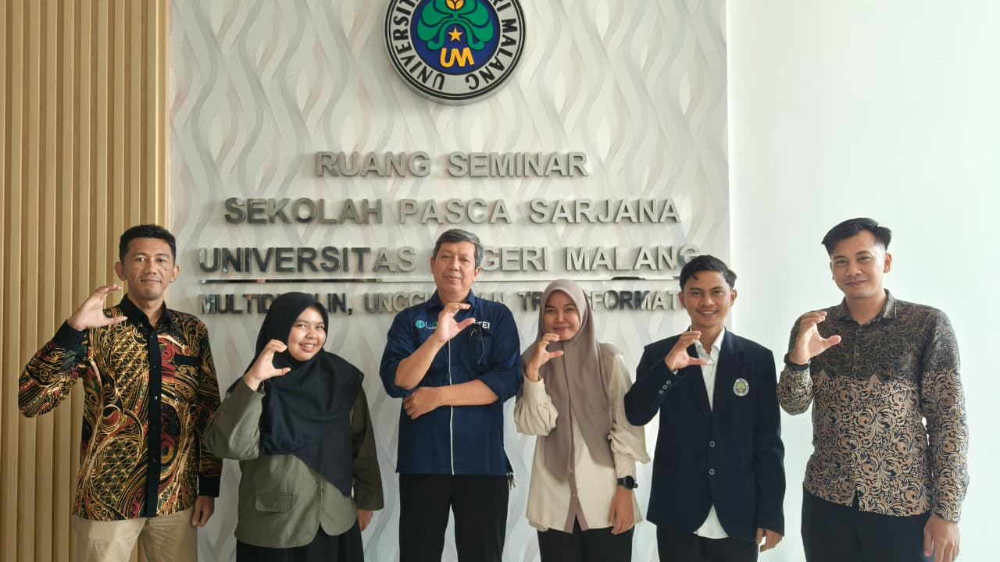
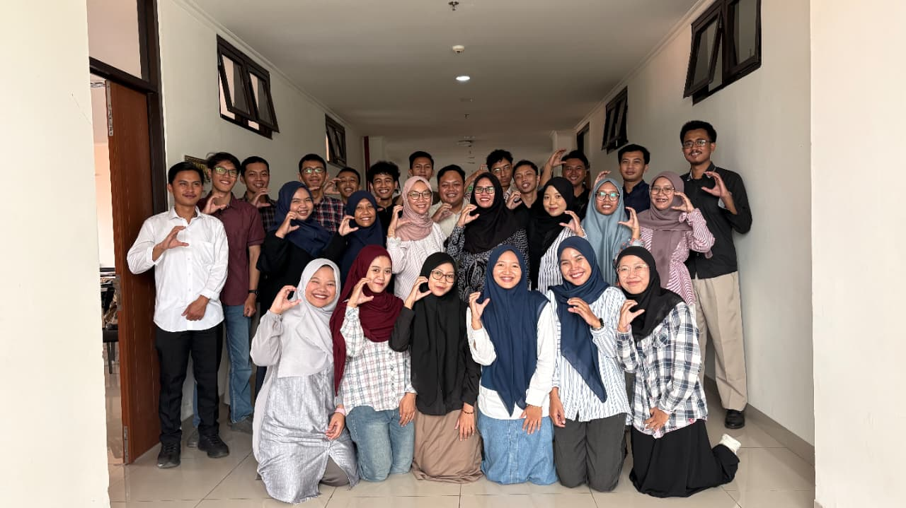

Jejak Karya
Jejak Karya
Kumpulan Karya dan Refleksi Pembelajaran
Berbagai hasil pembelajaran selama mengikuti Program PPG Calon Guru tersaji dalam bentuk karya dan dokumentasi. Setiap karya menunjukkan proses yang telah dilalui serta hasil yang diperoleh selama pembelajaran. Refleksi yang menyertainya memberikan gambaran tentang pengalaman dan perkembangan pemahaman serta keterampilan selama mengikuti program.
Semester 1
Membangun Dasar Pembelajaran
Semester 1 menjadi tahap awal dalam membangun pemahaman tentang pembelajaran, karakteristik murid, dan peran guru. Setiap mata kuliah memberikan perspektif yang saling berkaitan dalam memahami proses pembelajaran. Pemahaman tersebut menjadi dasar untuk menyusun kegiatan belajar yang sesuai dengan kebutuhan murid. Materi yang dipelajari kemudian diterapkan melalui kegiatan praktik mengajar pada PPL Terbimbing.
PPL Terbimbing
Menerapkan Pembelajaran dengan Pendampingan
Praktik Pengalaman Lapangan (PPL) Terbimbing memberikan kesempatan kepada mahasiswa untuk menerapkan pengetahuan dan keterampilan pembelajaran melalui pengalaman langsung di sekolah mitra. Kegiatan ini mencakup orientasi, observasi, asistensi, dan praktik pembelajaran yang dilakukan dengan pendampingan guru pamong. Melalui kegiatan tersebut, mahasiswa mengembangkan kompetensi pedagogik dan profesional dengan menerapkan Pembelajaran Mendalam serta menghubungkan teori dari berbagai mata kuliah.
Asistensi Mengajar
Kegiatan asistensi mengajar berfokus pada pendampingan penyusunan perangkat pembelajaran bersama guru pamong. Mahasiswa menelaah komponen pembelajaran, mulai dari tujuan, bahan ajar, asesmen, hingga rubrik penilaian berdasarkan prinsip pembelajaran mendalam. Proses kolaboratif ini dilakukan agar perangkat yang disusun sesuai dengan karakteristik peserta didik dan kebutuhan pembelajaran di kelas.
Praktik Pembelajaran Terbimbing Siklus 1
Praktik pelaksanaan terbimbing siklus 1 berfokus pada penerapan awal perangkat pembelajaran yang telah disusun bersama guru pamong. Mahasiswa melaksanakan pembelajaran secara terbimbing dengan memperhatikan tujuan pembelajaran, pengelolaan kelas, dan penggunaan asesmen yang sesuai. Hasil pelaksanaan kemudian dievaluasi untuk mengidentifikasi kendala serta menentukan perbaikan pada siklus berikutnya.
Praktik Pembelajaran Terbimbing Siklus 2
Praktik pelaksanaan terbimbing pada siklus 2 berfokus pada penyempurnaan strategi pembelajaran berdasarkan hasil evaluasi sebelumnya. Mahasiswa mulai menyesuaikan aktivitas pembelajaran dengan karakteristik dan kebutuhan belajar peserta didik agar pembelajaran lebih efektif dan bermakna. Proses pembelajaran dan asesmen kembali dievaluasi sebagai dasar penguatan pelaksanaan pada siklus selanjutnya.
Praktik Pembelajaran Terbimbing Siklus 3
Praktik pelaksanaan terbimbing pada siklus 3 berfokus pada penerapan perbaikan pembelajaran secara lebih optimal dan terarah. Mahasiswa melaksanakan pembelajaran dengan memperhatikan hasil refleksi dari siklus sebelumnya, termasuk pengelolaan pembelajaran, asesmen, dan tindak lanjut pembelajaran. Seluruh hasil praktik kemudian dievaluasi sebagai bentuk refleksi dan pertanggungjawaban pelaksanaan pembelajaran terbimbing.
Semester 2
Menguatkan Kompetensi sebagai Guru
Semester 2 melanjutkan proses pembelajaran dengan materi yang lebih mendalam untuk memperkuat kompetensi sebagai calon guru. Pembelajaran mencakup pengembangan profesionalisme, asesmen, serta aspek sosial dan emosional dalam pendidikan. Setiap mata kuliah memperluas pemahaman yang telah diperoleh pada Semester 1 dan PPL Terbimbing. Pengalaman tersebut menjadi dasar untuk menjalankan praktik pembelajaran dengan tanggung jawab yang lebih besar melalui PPL Mandiri.
PPL Mandiri
Mengelola Pembelajaran secara Mandiri
PPL Mandiri menjadi tahap penerapan pembelajaran dengan tingkat kemandirian yang lebih besar. Mahasiswa memperoleh ruang untuk mengelola kegiatan pembelajaran secara langsung dengan tetap mendapatkan arahan dari guru pamong. Kegiatan diawali melalui asistensi untuk membahas perangkat ajar yang akan digunakan dalam pembelajaran. Selama pelaksanaan di kelas, guru pamong tetap melakukan evaluasi melalui pengamatan dan refleksi bersama mahasiswa.
Asistensi Perangkat Ajar
Melakukan asistensi perangkat ajar bersama guru pamong sebelum pelaksanaan pembelajaran.
Melaksanakan Pembelajaran Mandiri
Melaksanakan pembelajaran secara mandiri dengan tanggung jawab penuh di kelas.
Pengamatan dan Evaluasi
Mendapatkan pengamatan dari observer atau teman sejawat untuk evaluasi pembelajaran.
Refleksi dan Evaluasi Bersama
Melakukan refleksi dan evaluasi bersama guru pamong untuk perbaikan ke depan.
Dokumentasi
Merekam Proses dan Karya Pembelajaran
Dokumentasi menjadi bagian yang melengkapi seluruh proses pembelajaran selama mengikuti Program PPG Calon Guru. Foto yang ditampilkan merekam kegiatan perkuliahan dan praktik pembelajaran di sekolah. Dokumentasi juga memperlihatkan proses kolaborasi serta kegiatan refleksi yang dilakukan selama program berlangsung. Kumpulan foto tersebut melengkapi karya dan refleksi sebagai gambaran dari proses yang telah dilalui.







